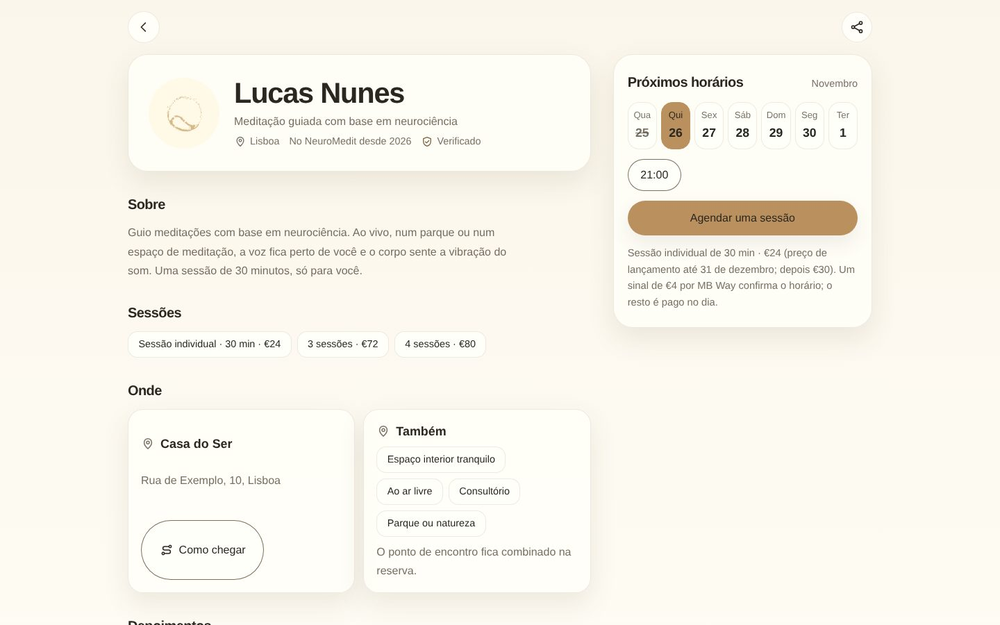
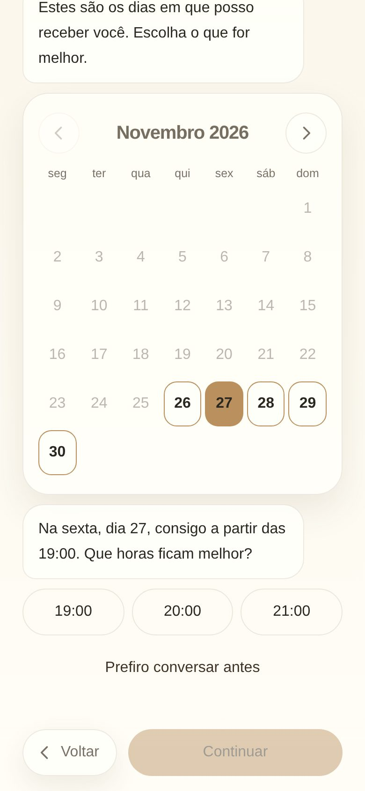
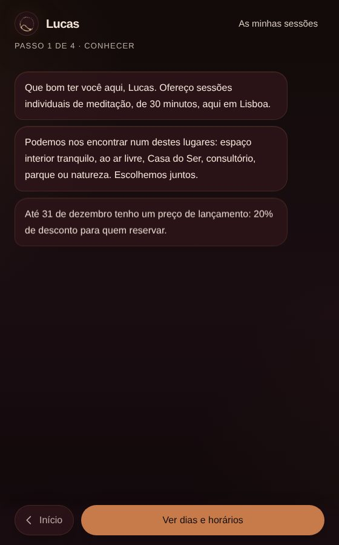
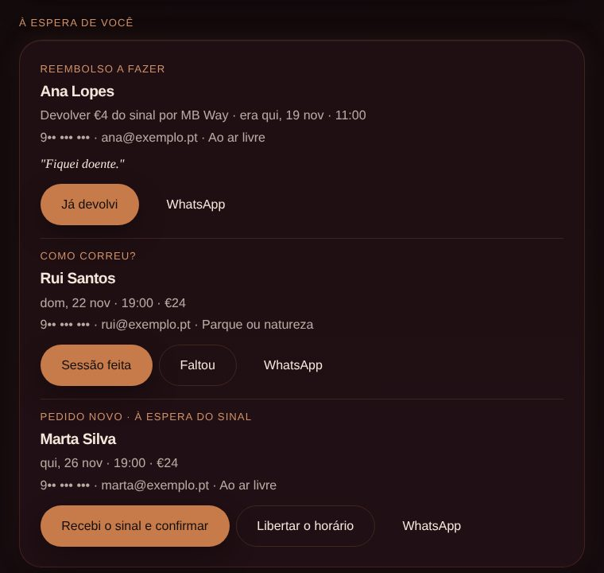
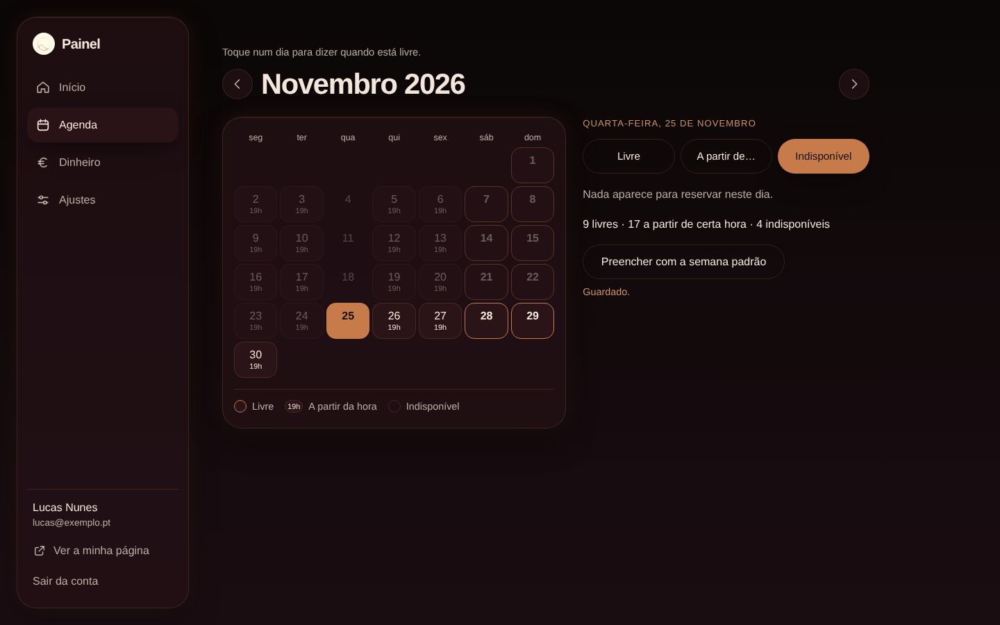
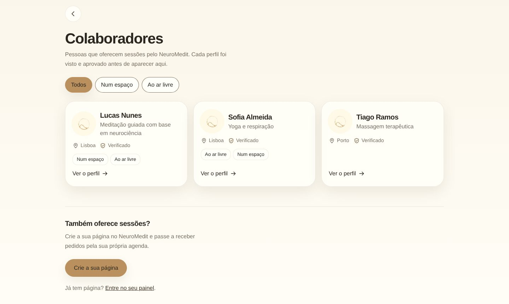

01
Uma pergunta de cada vez
As mensagens chegam uma a uma, como numa conversa. Quatro passos: conhecer, dia e hora, detalhes, feito. Um indicador diz sempre em que passo a pessoa está.
NeuroMedit · no ar · novembro de 2026
Marcar uma meditação ao vivo sem cansar quem já chega cansado.
Guio meditações ao vivo em Lisboa, num parque ou num espaço tranquilo. Desenhei o caminho inteiro: o perfil público, a reserva em quatro passos, o painel onde eu giro a agenda e os pedidos, e depois a abertura do mesmo sistema a outros profissionais.
Nota de método. Está no ar em neuromedit.com. As imagens usam dados de teste, com nomes inventados, para não mostrar clientes reais. Eu defini o fluxo, as regras e cada decisão de design; a IA (Claude) escreveu o código sob a minha direção, e eu testei e corrigi cada versão.

O problema
Os pedidos chegavam pelo WhatsApp e pelo Instagram: que dia, que hora, onde, quanto, como pagar. Eu perdia pedidos no meio das conversas e não tinha uma visão do mês.
Do outro lado, quem procura uma meditação costuma chegar cansado ou ansioso. Um formulário longo é mais uma exigência, e um erro no login, dentro do navegador do Instagram, basta para a pessoa desistir.
Marcar uma pausa não pode cansar.
Decisões de design
01
As mensagens chegam uma a uma, como numa conversa. Quatro passos: conhecer, dia e hora, detalhes, feito. Um indicador diz sempre em que passo a pessoa está.
02
No celular, Voltar e a ação principal ficam em baixo. A partir de 720 px a reserva abre em duas colunas, para o calendário e a conversa caberem lado a lado.
03
O calendário mostra apenas os dias em que posso receber. Ao tocar num dia, a conversa responde com as horas livres, já com folga para a deslocação entre lugares diferentes.
04
Dá para conhecer e escolher sem conta. O botão do Google aparece quando faz falta, com o porquê, e um aviso ajuda quem abriu o link dentro do Instagram, onde o login falha.
05
Cada horário é um registo único na base de dados. Se duas pessoas pedirem a mesma hora ao mesmo tempo, a segunda recebe uma mensagem clara e escolhe outra.
06
Um sinal de 4 € por MB Way confirma o horário; o resto paga-se no dia. Quem cancela a tempo pede o reembolso, e o painel lembra-me de o fazer.


O painel
Em vez de uma lista de tudo, o início junta o que está à minha espera: um sinal por confirmar, um reembolso por fazer, uma sessão que já passou e precisa de fecho (feita ou faltou). Atualiza-se em tempo real, sem recarregar a página.
Na Agenda, toco num dia para dizer se estou livre, livre a partir de certa hora ou indisponível, e posso preencher o mês com a minha semana padrão.


De um para muitos
Depois veio a pergunta: e se uma professora de yoga ou um massagista quiserem usar isto? Cada profissional passou a ter a sua página, a sua agenda e os seus pedidos, separados dos meus.

Diário de direção
Eu defini o que fazer, testei cada versão no celular e no computador e devolvi o que não estava certo. Alguns momentos em que a direção mudou o produto:
01
Vi
Decidi: nunca prender ninguém: mostrar logo o convite e explicar a conta no passo em que ela entra.
02
Vi
Decidi: um convite visível, e uma página que convence antes de pedir dados.
03
Vi
Decidi: um convite no fim, só depois do feedback e só para quem tem conta; “Agora não” esconde-o 14 dias.
04
Vi
Decidi: voltar aos tokens do design system até passar 4,5:1.